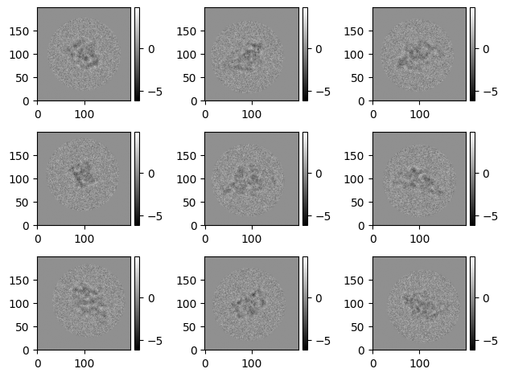
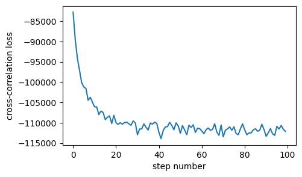
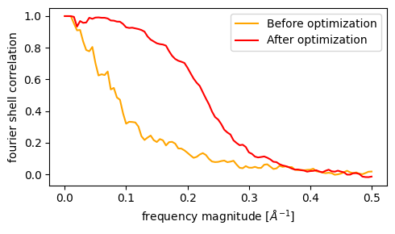
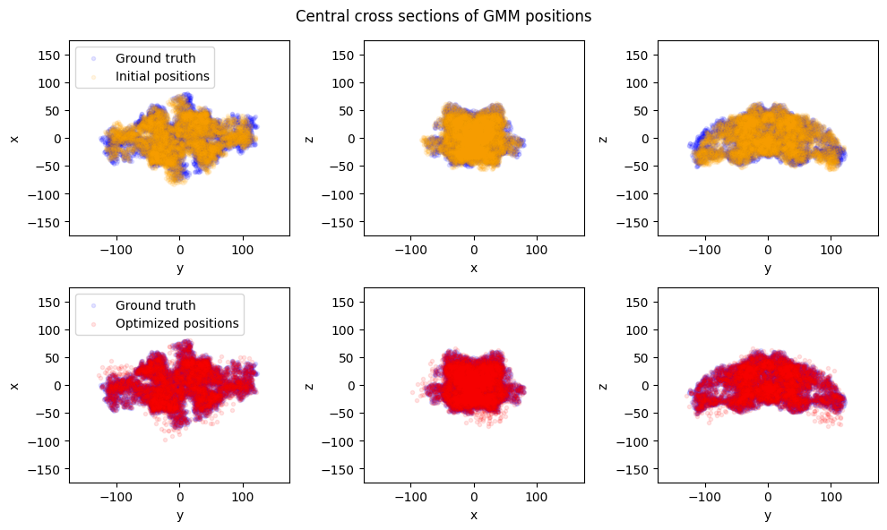

Structural refinement using gradient descent
Automatic differentiation using JAX is a powerful tool for conducting high-dimensional data analysis. This tutorial demonstrates how automatic differentiation may be leveraged for structure refinement.
The numerical experiment performed here can be described in 3 steps:
- Simulate a synthetic dataset of a protein in a "ground truth" conformation
- Define a image simulation model using a different conformation
- Recover the ground truth by optimizing the atom positions using gradient descent.
We will use thyroglobulin for this example, using structures modified from the Flatiron Institute cryo-EM conformational heterogeneity challenge.
References:
- Astore, Miro A., et al. "The Inaugural Flatiron Institute Cryo-EM Conformational Heterogeneity Challenge." bioRxiv (2025): 2025-07.
We will start by simulating a synthetic dataset.
# Imports for dataset generation
import math
import cryojax.simulator as cxs
import equinox as eqx
import jax
import jax.numpy as jnp
from cryojax.io import read_atoms_from_pdb
from cryojax.ndimage import transforms as tf
from cryojax.rotations import SO3
from jaxtyping import Array, PRNGKeyArray
from matplotlib import pyplot as plt
from mpl_toolkits.axes_grid1 import make_axes_locatable
def plot_image_stack(images, cmap="gray", **kwargs):
"""Plot an image stack"""
n_images_per_side = int(math.sqrt(images.shape[0]))
fig, axes = plt.subplots(nrows=n_images_per_side, ncols=n_images_per_side)
vmin, vmax = images.min(), images.max()
for idx, ax in enumerate(axes.ravel()):
im = ax.imshow(
images[idx], cmap=cmap, vmin=vmin, vmax=vmax, origin="lower", **kwargs
)
divider = make_axes_locatable(ax)
cax = divider.append_axes("right", size="5%", pad=0.05)
fig.colorbar(im, cax=cax)
fig.tight_layout()
# Dataset generation parameters
N_PARTICLES = 200
SIMULATE_RNG_SEED = 1234
SNR = 0.1
DEFOCUS_RANGE = (5000, 15000)
SPHERICAL_ABERRATION_IN_MM = 2.7
AMPLITUDE_CONTRAST_RATIO = 0.1
PIXEL_SIZE = 2.0
VOLTAGE_IN_KILOVOLTS = 300.0
IMAGE_DIM = 200
PAD_SCALE = 1.5
GMM_WIDTH_IN_ANGSTROMS = 3.0
def make_parameters(
rng_key: PRNGKeyArray, image_config: cxs.BasicImageConfig
) -> tuple[cxs.EulerAnglePose, cxs.ContrastTransferTheory]:
"""Generate random pose and CTF parameters"""
key, subkey = jax.random.split(rng_key)
rotation = SO3.sample_uniform(subkey)
ny, nx = image_config.shape
key, subkey = jax.random.split(key)
offset_in_angstroms = (
jax.random.uniform(subkey, (2,), minval=-0.1, maxval=0.1)
* jnp.asarray((nx, ny))
/ 2
* image_config.pixel_size
)
pose = cxs.EulerAnglePose.from_rotation_and_translation(rotation, offset_in_angstroms)
key, subkey = jax.random.split(key)
defocus_in_angstroms = jax.random.uniform(
subkey, (), minval=DEFOCUS_RANGE[0], maxval=DEFOCUS_RANGE[1], dtype=float
)
transfer_theory = cxs.ContrastTransferTheory(
ctf=cxs.AstigmaticCTF(
defocus_in_angstroms=defocus_in_angstroms,
spherical_aberration_in_mm=SPHERICAL_ABERRATION_IN_MM,
),
amplitude_contrast_ratio=AMPLITUDE_CONTRAST_RATIO,
)
return pose, transfer_theory
@eqx.filter_jit
@eqx.filter_vmap(in_axes=(0, None, None))
def simulate_dataset(
rng_key: PRNGKeyArray,
volume: cxs.GaussianMixtureVolume,
image_config: cxs.BasicImageConfig,
) -> tuple[Array, dict, tf.CircularCosineMask]:
"""Simulate a synthetic dataset"""
particle_rng_key, noise_rng_key = jax.random.split(rng_key, num=2)
pose, transfer_theory = make_parameters(particle_rng_key, image_config)
circular_mask = tf.CircularCosineMask(
image_config.coordinate_grid_in_angstroms,
radius=150.0,
rolloff_width=10.0,
xy_offset=pose.offset_in_angstroms,
)
image_model = cxs.make_image_model(
volume,
image_config,
pose,
transfer_theory,
normalizes_signal=True,
signal_region=circular_mask.get() == 1.0,
)
noise_model = cxs.UncorrelatedGaussianNoiseModel(
image_model, variance=1.0, signal_scale_factor=jnp.sqrt(SNR)
)
parameters = dict(
pose=pose, transfer_theory=transfer_theory, image_config=image_config
)
return (
noise_model.sample(noise_rng_key, mask=circular_mask),
parameters,
circular_mask,
)
# Load gaussian mixture. For simplicity, simulate using only C-alphas
ground_truth_positions, _ = read_atoms_from_pdb(
"./data/thyroglobulin_target.pdb",
selection_string="name CA",
)
n_atoms = ground_truth_positions.shape[0]
volume = cxs.GaussianMixtureVolume(
ground_truth_positions,
amplitudes=1.0,
variances=GMM_WIDTH_IN_ANGSTROMS**2,
)
# Instantiate `image_config`
padded_dim = int(PAD_SCALE * IMAGE_DIM)
pad_options = dict(shape=(padded_dim, padded_dim))
image_config = cxs.BasicImageConfig(
shape=(IMAGE_DIM, IMAGE_DIM),
pixel_size=PIXEL_SIZE,
voltage_in_kilovolts=VOLTAGE_IN_KILOVOLTS,
pad_options=pad_options,
)
# Create RNG keys and simulate
rng_keys = jax.random.split(jax.random.key(SIMULATE_RNG_SEED), num=N_PARTICLES)
dataset_images, dataset_parameters, masks = simulate_dataset(
rng_keys, volume, image_config
)
plot_image_stack(dataset_images[0:9])

Next, define the loss function. We will naively do a gradient descent on the positions of the C-alpha atoms to see if we can capture the large-scale difference of the conformational change.
@eqx.filter_value_and_grad
def compute_loss(atom_positions, args):
"""Cross-corrlelation loss over a batch of images"""
@eqx.filter_vmap(in_axes=(None, eqx.if_array(0)))
def compute_loss_per_particle(atom_positions, args):
(image, particle_parameters, mask) = args
volume = cxs.GaussianMixtureVolume(
atom_positions,
amplitudes=1.0,
variances=GMM_WIDTH_IN_ANGSTROMS**2,
)
image_model = cxs.make_image_model(
volume,
image_config=particle_parameters["image_config"],
pose=particle_parameters["pose"],
transfer_theory=particle_parameters["transfer_theory"],
normalizes_signal=True,
signal_region=mask.get() == 1.0,
)
return -jnp.sum(image_model.simulate(mask=mask) * image)
return jnp.sum(compute_loss_per_particle(atom_positions, args))
Finally, perform the gradient descent. To do so, we will implement a stochastic gradient descent, choosing random subsets of the dataset for each gradient step. This will require defining what is called a dataloader, which allows us to loop through these random subsets.
We will do this in a naive way, but to learn about dataloaders in general see pytorch's implementation. At the time of writing this the JAX ecosystem has a dataloader library in development called grain.
import numpy as np
import optax
from cryojax.dataset import AbstractDataset
class PyTreeDataset(AbstractDataset):
"""Dataset as an arbitrary in-memory PyTree, where all arrays
have a batch dimension.
"""
def __init__(self, pytree):
self.pytree_dynamic, self.pytree_static = eqx.partition(pytree, eqx.is_array)
assert all(
arr.shape[0] == len(self) for arr in jax.tree.leaves(self.pytree_dynamic)
)
def __getitem__(self, index):
return eqx.combine(
jax.tree.map(lambda x: x[index], self.pytree_dynamic), self.pytree_static
)
def __len__(self) -> int:
return jax.tree.leaves(self.pytree_dynamic)[0].shape[0]
def dataloader(dataset, batch_size):
"""A simple dataloader that splits the dataset into
random subsets of size `batch_size`.
"""
dataset_size = len(dataset)
indices = np.arange(dataset_size)
while True:
perm = np.random.permutation(indices)
start = 0
end = batch_size
while end <= dataset_size:
batch_perm = perm[start:end]
yield dataset[batch_perm]
start = end
end = start + batch_size
# Optimisation parameters
BATCH_SIZE = 20
NUM_STEPS = 100
PRINT_EVERY = 10
OPTIM = optax.adabelief(learning_rate=0.5, nesterov=True)
# Wrap everything into a single JIT region
@eqx.filter_jit(donate="all")
def make_step(atom_positions, opt_state, args):
loss, grads = compute_loss(atom_positions, args)
updates, opt_state = OPTIM.update(grads, opt_state)
atom_positions = eqx.apply_updates(atom_positions, updates)
return loss, atom_positions, opt_state
# Initialize optimization using different conformation
initial_positions, _ = read_atoms_from_pdb(
"./data/thyroglobulin_initial.pdb", selection_string="name CA"
)
# Run optimization
pytree = (dataset_images, dataset_parameters, masks)
dataset = PyTreeDataset(pytree)
opt_positions, opt_state, loss_values = (
initial_positions,
OPTIM.init(initial_positions),
[],
)
for step, data_batch in zip(range(NUM_STEPS), dataloader(dataset, BATCH_SIZE)):
loss, opt_positions, opt_state = make_step(opt_positions, opt_state, data_batch)
loss_values.append(loss.item())
if step % PRINT_EVERY == 0 or step in [0, NUM_STEPS - 1]:
print(f"step={step}, loss={loss.item()}")
fig, ax = plt.figure(figsize=(5, 3)), plt.gca()
ax.plot(range(NUM_STEPS), loss_values)
ax.set(xlabel="step number", ylabel="cross-correlation loss")
step=0, loss=-82785.3125
step=10, loss=-106068.6015625
step=20, loss=-109953.0234375
step=30, loss=-112941.578125
step=40, loss=-112299.015625
step=50, loss=-112578.9609375
step=60, loss=-112034.578125
step=70, loss=-113446.4375
step=80, loss=-111717.9375
step=90, loss=-113332.6484375
step=99, loss=-112113.4765625
[Text(0.5, 0, 'step number'), Text(0, 0.5, 'cross-correlation loss')]

Now let's check the results! Let's first look at FSC curves between the ground truth and structure before and after refinement.
from cryojax.coordinates import make_radial_frequency_grid
from cryojax.ndimage import compute_fourier_shell_correlation, rfftn
def plot_fsc(pos1, pos2, ax, **kwargs):
shape, voxel_size = (IMAGE_DIM, IMAGE_DIM, IMAGE_DIM), PIXEL_SIZE
compute_voxels = lambda pos: cxs.GaussianMixtureVolume(
pos,
amplitudes=1.0,
variances=GMM_WIDTH_IN_ANGSTROMS**2,
).to_real_voxel_grid(shape, voxel_size)
voxels1 = rfftn(compute_voxels(pos1))
voxels2 = rfftn(compute_voxels(pos2))
frequencies = make_radial_frequency_grid(shape)
fsc, frequency_bins, _ = compute_fourier_shell_correlation(
voxels1,
voxels2,
frequencies,
maximum_frequency=0.5,
)
ax.plot(frequency_bins, fsc, **kwargs)
fig, ax = plt.figure(figsize=(5, 3)), plt.gca()
plot_fsc(
ground_truth_positions,
initial_positions,
ax,
label="Before optimization",
color="orange",
)
plot_fsc(
ground_truth_positions, opt_positions, ax, label="After optimization", color="red"
)
ax.set(xlabel=r"frequency magnitude [$\AA^{-1}$]", ylabel="fourier shell correlation")
ax.legend()
plt.tight_layout()

The above FSC curves quantifies the increase in correlation after gradient descent refinement. Indeed, visually the refinement is able to (roughly) recover the ground truth conformation!
def plot_cross_sections(
pos1, pos2, axes, label1=None, label2=None, color1="b", color2="orange"
):
kwargs = dict(marker=".", alpha=0.1)
xlim, ylim = (-175, 175), (-175, 175)
for pos, label, color in zip((pos1, pos2), (label1, label2), (color1, color2)):
axes[0].scatter(pos[:, 1], pos[:, 0], c=color, label=label, **kwargs)
axes[0].set(xlabel="y", ylabel="x", xlim=xlim, ylim=ylim)
axes[1].scatter(pos[:, 0], pos[:, 2], c=color, **kwargs)
axes[1].set(xlabel="x", ylabel="z", xlim=xlim, ylim=ylim)
axes[2].scatter(pos[:, 1], pos[:, 2], c=color, **kwargs)
axes[2].set(xlabel="y", ylabel="z", xlim=xlim, ylim=ylim)
axes[0].legend(loc="upper left")
return fig, axes
fig, axes = plt.subplots(figsize=(10, 6), ncols=3, nrows=2)
plot_cross_sections(
ground_truth_positions,
initial_positions,
axes=axes[0, :],
label1="Ground truth",
label2="Initial positions",
color2="orange",
)
plot_cross_sections(
ground_truth_positions,
opt_positions,
axes=axes[1, :],
label1="Ground truth",
label2="Optimized positions",
color2="red",
)
fig.suptitle("Central cross sections of GMM positions")
plt.tight_layout()

Interactive plots of the 3D point clouds can be generated locally using plotly with the following code block:
import plotly.graph_objects as go
from plotly.subplots import make_subplots
def plot_3d_point_clouds_interactive(
pos1, pos2, label1="Ground truth", label2="Comparison"
):
"""Create interactive 3D scatter plots with plotly"""
# Create subplots with 3D scene type
fig = make_subplots(
rows=1,
cols=2,
subplot_titles=[f"{label1} vs Initial", f"{label1} vs Optimized"],
specs=[[{"type": "scatter3d"}, {"type": "scatter3d"}]],
)
# First subplot: Ground truth vs Initial
fig.add_trace(
go.Scatter3d(
x=pos1[:, 0],
y=pos1[:, 1],
z=pos1[:, 2],
mode="markers",
marker=dict(size=3, color="blue", opacity=0.7),
name=label1,
showlegend=True,
),
row=1,
col=1,
)
fig.add_trace(
go.Scatter3d(
x=initial_positions[:, 0],
y=initial_positions[:, 1],
z=initial_positions[:, 2],
mode="markers",
marker=dict(size=3, color="orange", opacity=0.7),
name="Initial positions",
showlegend=True,
),
row=1,
col=1,
)
# Second subplot: Ground truth vs Optimized
fig.add_trace(
go.Scatter3d(
x=pos1[:, 0],
y=pos1[:, 1],
z=pos1[:, 2],
mode="markers",
marker=dict(size=3, color="blue", opacity=0.7),
name=label1,
showlegend=False, # Don't duplicate legend
),
row=1,
col=2,
)
fig.add_trace(
go.Scatter3d(
x=opt_positions[:, 0],
y=opt_positions[:, 1],
z=opt_positions[:, 2],
mode="markers",
marker=dict(size=3, color="red", opacity=0.7),
name="Optimized positions",
showlegend=True,
),
row=1,
col=2,
)
# Update layout
fig.update_layout(
title="Interactive 3D Point Cloud Comparison",
width=1200,
height=600,
scene=dict(
xaxis_title="X (Å)",
yaxis_title="Y (Å)",
zaxis_title="Z (Å)",
aspectmode="cube",
),
scene2=dict(
xaxis_title="X (Å)",
yaxis_title="Y (Å)",
zaxis_title="Z (Å)",
aspectmode="cube",
),
)
return fig
# Generate interactive plot:
fig = plot_3d_point_clouds_interactive(
ground_truth_positions, initial_positions, label1="Ground truth"
)
fig.show()